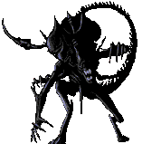

![[Raemer Puff image - image not recovered]](images/mouse.gif) A
Raemer Puff
A
Raemer Puff
Welcome!!
You have made it to Ashashua's Exotic foods page! In this section you will learn about Ashashua's selection of foods! There is a wide variety of foods on this planet, however we are always discovering new recepies, stop by regularly because there's always more on Ashashua!!!
The creampop of course!!
The creampop is the most famous delicacy on Ashashua. As you can see this is a very yummy yummy looking food! Some people on Ashashua actually live off these things and nothing else. They are soooooo yummy that many people get addicted to these! Many wars on Ashashua have been started because of this delicious food, although Ashashua has gone through many changes since the Creampop mullinium. People generally get along nowa days on Ashashua. If someone wants a Creampop they just mearly ask for it. It is customary on this planet to hand a Creampop to someone of great authority. If you do not perform this custom, it is considered VERY rude, and you will be thrown into the "Tower Of Lost Souls", where you will be transformed into a hideous creature, and be a slave to the keeper of the towers "Gloomwing".
A
Raemer Puff
ooooohh Raemer Puffs! This frightened little creature is about ready to be a crispy critter!! HaHa! Although this food is not as popular as the Creampop, he still gets his fair share of watering Ashashuaian mouth's waiting to devour him. Reemers are known for eating these creatures with no mercy. Never get near a Reemer when he's trying to catch a Raemer Puff, because well....I think the Creatures page can explain that one for ya!

As you can see.......this is nothing like a Toaster Stroodle that you're used to seeing!!!! No, No! This very hostile little thing is the rarest of the food chain on Ashashua. The Stroodle can be found on the Moons Of Ashashua. The "Farthest Moons Of Ashashua have yet to be discovered, although this creature can be found on the closer moons of Ashashua. The problem with the Stroodle is , no-one wants to hunt them because they are sooooo hideous, this is why they are so rare. Only the bravest of Ashashuainan's seek out this food. There is also a rumor on Ashashua that these hideous creatures can be found in, or near the Tower Of Lost Souls.
Ahhhh can't forget the Keedlelaobe!
Unlinke the creampop this delicious food should not be taken for granted! The laobe is very rich, while the keedle is extremely high in saturated fat, but if anyone were to eat more than two of these things in a 1 to 8 hour period , a chemical reaction would occur causing them to experience a high electrical impusle throughout the tastebuds, causing a very painfull burning effect, after that they would simply go numb, in time the tastebuds would literally deteriorate, finally, in the later stages of "keedleopia" the body would go into shock , possibly causing a coma or even death. So now you can see why maybe the creampop is the more popular of the two.
Come back regularly to see if more foods have been added! |